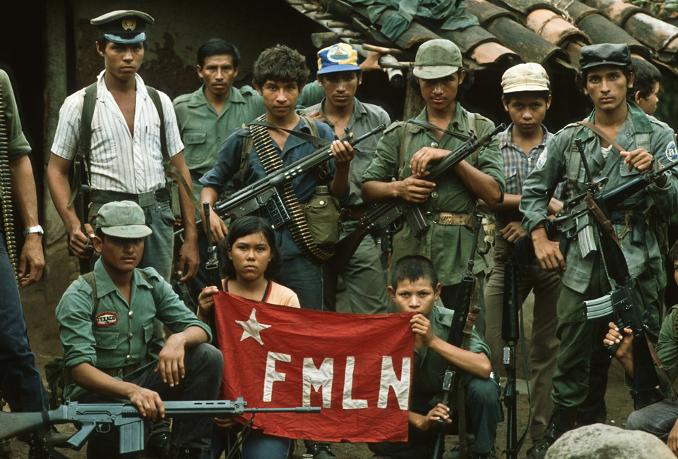

Personalidades que Marcaron la Guerra
La Guerra Civil de El Salvador fue moldeada por la acción de diversas figuras, tanto militares y políticas como religiosas y sociales. Sus decisiones y roles tuvieron un impacto significativo en el curso del conflicto y en el eventual proceso de paz.

Monseñor Óscar Arnulfo Romero
Arzobispo de San Salvador. Se convirtió en una voz influyente en defensa de los derechos humanos y en denuncia de la violencia y la represión gubernamental. Su asesinato el 24 de marzo de 1980, mientras oficiaba misa, conmocionó al mundo y se considera un catalizador que profundizó el conflicto. Fue canonizado por la Iglesia Católica en 2018.
Comandantes del FMLN
El Frente Farabundo Martí para la Liberación Nacional (FMLN) estuvo compuesto por varios grupos guerrilleros, y sus comandantes tuvieron un papel central en la dirección de las operaciones armadas y en las negociaciones de paz. Entre ellos destacan figuras como Joaquín Villalobos, Schafik Hándal, Salvador Sánchez Cerén, Leonel González (Salvador Guerra), y Ferman Cienfuegos.
Presidentes y Militares
Desde el lado gubernamental, varios presidentes y figuras militares fueron clave. Entre ellos, el presidente José Napoleón Duarte (1984-1989), quien intentó establecer un gobierno civil en medio de la guerra y fue parte de los primeros diálogos de paz. También, militares de alto rango que dirigieron las fuerzas armadas.
Actores Internacionales
La guerra también tuvo figuras internacionales importantes, como los mediadores de las Naciones Unidas, que jugaron un papel crucial en las negociaciones de paz, y representantes de gobiernos como Estados Unidos, Cuba y la Unión Soviética, cuya influencia fue significativa en el desarrollo del conflicto.